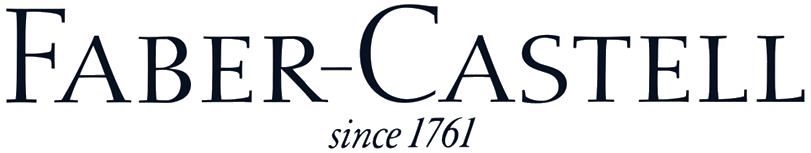

파버카스텔 Faber-Castell
파버카스텔(Faber-Castell)은 1761년 독일에서 설립된 필기구 제조 회사로, 연필과 색연필, 지우개, 만년필 등을 생산한다.
최종 업데이트

파버카스텔은 어떤 브랜드인가
파버카스텔은 뉘른베르크와 인근 슈타인 지역에서 성장한 독일의 필기구 회사로, 연필과 색연필, 만년필, 지우개 등을 주력으로 생산한다. 로타르 폰 파버 대에 A.W.Faber 상표를 등록하며 필기구 브랜드화를 최초로 이루어냈고, 이후 카스텔 가문과의 결합으로 현재의 파버카스텔이라는 사명을 갖추게 되었다.
카스텔9000 연필과 그립2001, 폴리크로모스 색연필 등은 연필 애호가들 사이에서 명품으로 꼽히는 제품이다. 고급 필기구 라인인 그라프 폰 파버 카스텔을 통해 프리미엄 시장에도 진출했다.
친환경 생산을 경영 원칙으로 삼아 브라질 조림 사업과 수용성 재료 개발 등을 지속해왔다. 현재는 세계 여러 나라에 생산 및 판매 지사를 둔 글로벌 필기구 기업으로 자리잡고 있다.
파버카스텔은 어떻게 시작되고 성장했나
파버카스텔은 원래 캐비닛 제조업자였던 카스파르 파버(1730~1784)가 독일 뉘른베르크 인근 슈타인 지역에서 연필 생산으로 성공을 거두며 시작되었다. 아들 안톤 빌헬름 파버가 회사를 물려받아 뉘른베르크에 본사를 정착시켰고, 이후 게오르그 레온하르트 파버를 거쳐 로타르 폰 파버 대에 이르러 공장 현대화와 A.W.Faber 상표 등록 등으로 회사를 글로벌화시켰다.
로타르의 외동아들 빌헬름 폰 파버가 요절한 뒤 미망인 오틸리에가 잠시 회사를 운영했고, 딸 오틸리에 폰 파버가 알렉산더 폰 카스텔 뤼덴하우젠 백작과 결혼하면서 회사명이 파버카스텔로 바뀌었다. 이후 롤란드 폰 파버 카스텔 백작이 요한 파버 연필 공장과 브라질의 라피스 요한 파버를 인수하고 1960년대부터 여러 나라에 해외 지사를 설립하며 사세를 확장했다.
파버카스텔의 브랜드 아이덴티티는 무엇인가
육각형 연필의 표준을 만들고 최초로 필기구를 브랜드화한 전통과, 브라질 조림 사업 등 친환경 경영을 함께 내세우는 점이 다른 필기구 회사와 구분되는 지점이다.
파버카스텔의 대표 제품과 서비스는 무엇인가
대표 제품으로는 1905년 출시된 카스텔9000 연필이 있으며, 단단한 연필심과 특수 공법으로 연필 애호가들 사이에서 오랫동안 베스트셀러로 꼽힌다. 삼각형 그립이 특징인 그립2001은 2000년 미국 경제지 비즈니스 위크의 '올해의 10대 상품'으로 소개되기도 했다.
폴리크로모스 색연필은 유성 색연필로 여러 예술가들이 애용해온 제품이다. 고급 라인인 그라프 폰 파버 카스텔은 뉘른베르크 나무 장인들이 만든 필기구로 구성되며, 백금 도금 퍼펙트 펜슬 등 프리미엄 제품을 선보인다.
이 밖에 지우개, 만년필 등도 생산한다.
파버카스텔은 지금 어떤 상태인가
현재 대표는 1978년 취임한 백작 안톤 볼프강 파버 카스텔로, 여러 해외 지사와 말레이시아의 지우개 공장, 코스타리카의 제조공장 설립 등을 이끌었다. 브라질 상파울로 지사는 세계에서 가장 큰 파버카스텔 연필공장으로 운영되고 있다.
1993년 제품분류를 통해 회사 이미지를 재정립했고, 2000년에는 독일 금속노조와 사회 협약을 맺어 전 세계 사업장에 적용하기로 했다.
파버카스텔 로고는 어떻게 변해왔나
자주 묻는 질문
파버카스텔는 어느 나라 브랜드인가요?
파버카스텔는 독일의 홈·라이프스타일 브랜드입니다.
파버카스텔의 브랜드 아이덴티티는 무엇인가요?
육각형 연필의 표준을 만들고 최초로 필기구를 브랜드화한 전통과, 브라질 조림 사업 등 친환경 경영을 함께 내세우는 점이 다른 필기구 회사와 구분되는 지점이다.
파버카스텔의 대표 제품은 무엇인가요?
대표 제품으로는 1905년 출시된 카스텔9000 연필이 있으며, 단단한 연필심과 특수 공법으로 연필 애호가들 사이에서 오랫동안 베스트셀러로 꼽힌다.
파버카스텔는 현재 어떤 상태인가요?
현재 대표는 1978년 취임한 백작 안톤 볼프강 파버 카스텔로, 여러 해외 지사와 말레이시아의 지우개 공장, 코스타리카의 제조공장 설립 등을 이끌었다.
파버카스텔의 창업자는 누구인가요?
파버카스텔의 창업자는 Kaspar Faber입니다(위키데이터 기준).
파버카스텔의 본사는 어디에 있나요?
파버카스텔의 본사는 Stein에 있습니다(위키데이터 기준).
파버카스텔의 공식 웹사이트는 어디인가요?
파버카스텔의 공식 웹사이트는 https://www.faber-castell.com/ 입니다.
출처와 검증
파버카스텔 관련 참고: 공식 웹사이트 · 위키데이터 Q455476 · 한국어 위키백과 · 영어 위키백과. 브랜드명은 한글과 원어를 함께 표기하되 데이터에 없는 표기는 만들지 않습니다. 기원 국가·설립연도는 검수된 정의문에서 확인된 값을 우선하고, 없을 때만 공식 웹사이트 URL이 일치하는 위키데이터 개체의 값을 씁니다. 위키데이터 값은 2026-09-26 기준입니다.